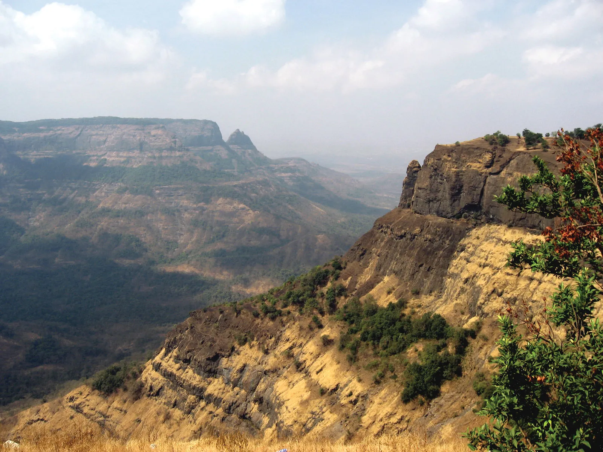
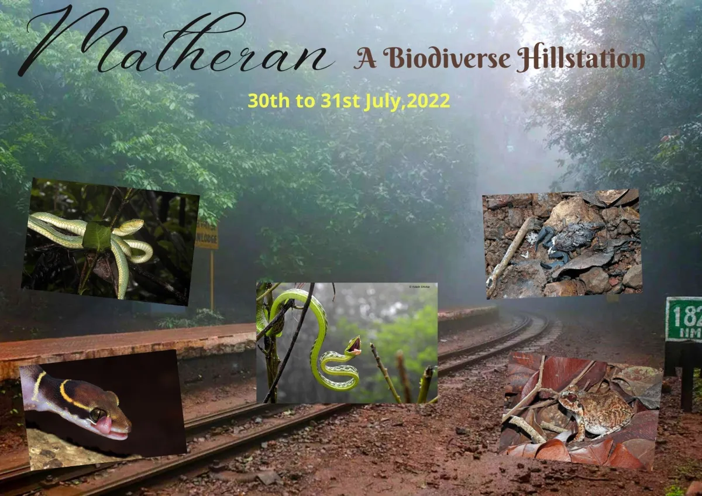
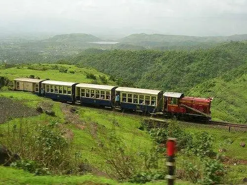

Matheran is a partially automobile free hill station and a municipal council in the Karjat taluka of the Raigad district located in the Indian state of Maharashtra. Matheran is part of the Mumbai Metropolitan Region, and one of the smallest hill stations in India. It is located in the Western Ghats, at an elevation of around 800 m (2,625 feet) above sea level. It is about 90 km from Mumbai, and 120 km from Pune. This proximity to these urban areas makes it a weekend getaway for many. Matheran, which means "forest on the forehead" (of the mountains) in Marathi, is an eco-sensitive region, declared by the Ministry of Environment, Forest and Climate Change, Government of India. There are many hotels and Parsi bungalows in the area. Old British colonial architecture is preserved in Matheran. The roads are made of red laterite earth.

Matheran was identified by Hugh Poyntz Malet, the then district collector of Raigad district in the May of 1850. Lord Elphinstone, the then Governor of Bombay laid the foundations of the development as a future hill station. The British developed Matheran as a getaway from the regional summer heat. It is also the birthplace of freedom fighter Veer Bhai Kotwal. The Matheran Railway The Matheran Hill Railway was built in 1907 by Sir Adamjee Peerbhoy and covers a distance of 20 km (12 mi), through forest land. The railway was inspected by UNESCO officials, but failed to make it to the list of the World Heritage Sites. India's other Hill Railways like the Darjeeling Railway, the Kangra Valley Railway, Nilgiri Mountain Railway are already on the list.[2] Old steam engine of the Matheran Toy Train Old steam engine of the Matheran Toy Train The Toy train was shut down for the most part in 2016 and 2017. It became re-operational since 26 January 2018 and was re-inaugurated by the then Chief Minister of Maharashtra, Mr. Devendra Fadnavis. However, it was temporarily suspended again after a landslide in the 2019. Thereafter, it operates shuttle rides between Aman Lodge and Matheran Station on an hourly basis and also an Battery Operated E-Rikshaw which runs from Aman Lodge to Matheran Market.

Geographically the rock types are solely composed of Deccan trap with inter trappeans of Cretaceous, Eoceuerage and laterites of a still younger age. The rock is basalt, which has given rise to secondary alteration known as laterite. The laterite predominates the hills and almost covers the hilltops. This makes the hard exposed surfaces of the laterite show red gravelly earth. The soil has a vermicular or pisolitic structure and contains a large amount of water. There is little soil cover over most of the hilltop. The topmost layer of rock is a soft porous iron-clay, through which there is drainage of water by the beginning of summer.
Semi-evergreen forests are present in the Matheran.[4] The trees are evergreen, making the plateau forests very dense and even congested in places. The laterite, porous soil along with very heavy rainfall mixed with dense fog has resulted in unique flora rich in diversity on the plateau. The forests show vegetation in top, middle and ground storeys. The trees form a cover over a large variety of shade-loving herbs, climbers, ferns and mosses. The forests of Matheran have attracted many botanists: Smyth J.Y.(1871), Birdwood H.M. (1886) and (1896), Cooke T. (1887–1901), Woodrow G.M. (1897–1901), Irani N.A.(1962), Satyanarayann & Mudliar (1959), Vartak, V.D.(1966), Kothari & Moorthy (1993).[5] A good collection of the dried plants is deposited in the Blatter Herbarium, St. Xavier's College, Bombay, Mumbai. Matheran has a huge number of medicinal plants and herbs. It was declared an Eco-Sensitive zone (ESZ) by the Union Environment Ministry on 4 February 2003.[6] The declaration as ESZ has led to the stoppage of developmental activities and construction of hazardous industries

The town also has a large monkey population, including bonnet macaques and Hanuman langurs. Domesticated horses for riding are also in large numbers and are one of the icons of Matheran. Inside the forests, animals like barking deer, Malabar giant squirrels, foxes, wild boars, mongooses can be found. But these animals are rare in numbers compared to the monkeys and usually do not venture to places with human activity. Leopard Sightings There have been reports of leopard sightings in Matheran a few times in last decade. Leopards are not known to dwell in Matheran however. Dense forests in the valleys surrounding Matheran have been suspected of housing them. Their dwindling population in India however has led their sightings to be extremely rare nowadays. There have been zero reported incidents of leopard attacks in Matheran.
Matheran is connected to Mumbai (100 km) & Pune (120 km) by rail and road, with the closest railway station being in the foothill town of Neral. The nearest airport is the Chhatrapati Shivaji Maharaj International Airport, Mumbai. Matheran Railway Engine Matheran Railway Rail Matheran has a narrow gauge railway station in the town center. The old Matheran Hill Railway offers several daily trains to Neral. The Toy train is connected to the mainline rail route at the Neral Junction. Mini train or Toy train service started between Neral and Matheran from 22 October 2022. The train between the Aman lodge and Matheran is also in place at intervals of approximately every hour having approximately 85 seats. Presently 2 UP and 2 DOWN train service has been started. The first train starts at 8:50 A. M. from Neral, second train is at 2:20 P. M. You will reach Matheran at 11:30 A. M. and 5:00 P. M. respectively. Matheran to Neral trains are at 2:45 P. M. and 4:20 P. M. that will reach Neral at 5:30 P. M. and 7 P. M. respectively. Road There is a taxi service available from the Neral railway station till Aman Lodge, while bus services are available from the railway stations of Neral and Karjat both. No automobiles except for a Municipality operated ambulance and e-rickshaws are allowed inside. Prior to December 6, 2022, e-rickshaws were not permitted inside as well.
